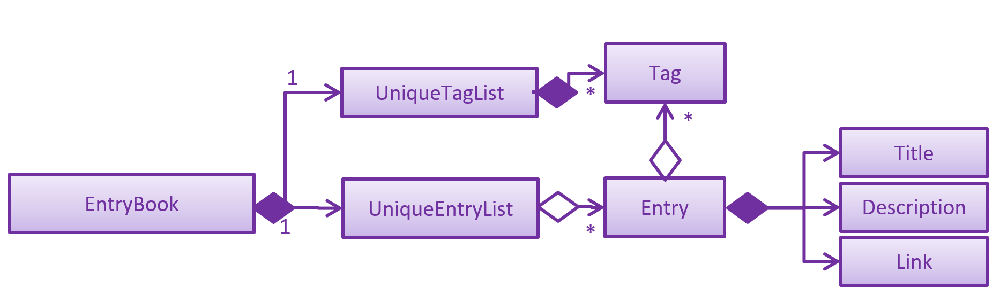

By: CS2103-AY1819S2-W10-1 Since: Jan 2019 Licence: MIT
- 1. Setting up
- 2. Design
- 3. Implementation
- 4. Documentation
- 5. Testing
- 6. Dev Ops
- Appendix A: Suggested Programming Tasks to Get Started
- Appendix B: Product Scope
- Appendix C: User Stories
- Appendix D: Use Cases
- Appendix E: Non Functional Requirements
- Appendix F: Glossary
- Appendix G: Product Survey
- Appendix H: Instructions for Manual Testing
1. Setting up
1.1. Prerequisites
-
JDK
9or laterJDK 10on Windows will fail to run tests in headless mode due to a JavaFX bug. Windows developers are highly recommended to use JDK9. -
IntelliJ IDE
IntelliJ by default has Gradle and JavaFx plugins installed.
Do not disable them. If you have disabled them, go toFile>Settings>Pluginsto re-enable them.
1.2. Setting up the project in your computer
-
Fork this repo, and clone the fork to your computer
-
Open IntelliJ (if you are not in the welcome screen, click
File>Close Projectto close the existing project dialog first) -
Set up the correct JDK version for Gradle
-
Click
Configure>Project Defaults>Project Structure -
Click
New…and find the directory of the JDK
-
-
Click
Import Project -
Locate the
build.gradlefile and select it. ClickOK -
Click
Open as Project -
Click
OKto accept the default settings -
Open a console and run the command
gradlew processResources(Mac/Linux:./gradlew processResources). It should finish with theBUILD SUCCESSFULmessage.
This will generate all resources required by the application and tests. -
Open
MainWindow.javaand check for any code errors-
Due to an ongoing issue with some of the newer versions of IntelliJ, code errors may be detected even if the project can be built and run successfully
-
To resolve this, place your cursor over any of the code section highlighted in red. Press ALT+ENTER, and select
Add '--add-modules=…' to module compiler optionsfor each error
-
-
Repeat this for the test folder as well (e.g. check
HelpWindowTest.javafor code errors, and if so, resolve it the same way)
1.3. Verifying the setup
-
Run the
seedu.address.MainAppand try a few commands -
Run the tests to ensure they all pass.
1.4. Configurations to do before writing code
1.4.1. Configuring the coding style
This project follows oss-generic coding standards. IntelliJ’s default style is mostly compliant with ours but it uses a different import order from ours. To rectify,
-
Go to
File>Settings…(Windows/Linux), orIntelliJ IDEA>Preferences…(macOS) -
Select
Editor>Code Style>Java -
Click on the
Importstab to set the order-
For
Class count to use import with '*'andNames count to use static import with '*': Set to999to prevent IntelliJ from contracting the import statements -
For
Import Layout: The order isimport static all other imports,import java.*,import javax.*,import org.*,import com.*,import all other imports. Add a<blank line>between eachimport
-
Optionally, you can follow the UsingCheckstyle.adoc document to configure Intellij to check style-compliance as you write code.
1.4.2. Setting up CI
Set up Travis to perform Continuous Integration (CI) for your fork. See UsingTravis.adoc to learn how to set it up.
After setting up Travis, you can optionally set up coverage reporting for your team fork (see UsingCoveralls.adoc).
| Coverage reporting could be useful for a team repository that hosts the final version but it is not that useful for your personal fork. |
Optionally, you can set up AppVeyor as a second CI (see UsingAppVeyor.adoc).
| Having both Travis and AppVeyor ensures your App works on both Unix-based platforms and Windows-based platforms (Travis is Unix-based and AppVeyor is Windows-based) |
1.4.3. Getting started with coding
When you are ready to start coding,
-
Get some sense of the overall design by reading Section 2.1, “Architecture”.
-
Take a look at Appendix A, Suggested Programming Tasks to Get Started.
2. Design
2.1. Architecture
The Architecture Diagram given above explains the high-level design of the App. Given below is a quick overview of each component.
The .pptx files used to create diagrams in this document can be found in the diagrams folder. To update a diagram, modify the diagram in the pptx file, select the objects of the diagram, and choose Save as picture.
|
Main has only one class called MainApp. It is responsible for,
-
At app launch: Initializes the components in the correct sequence, and connects them up with each other.
-
At shut down: Shuts down the components and invokes cleanup method where necessary.
Commons represents a collection of classes used by multiple other components.
The following class plays an important role at the architecture level:
-
LogsCenter: Used by many classes to write log messages to the App’s log file.
The rest of the App consists of four components.
Each of the four components
-
Defines its API in an
interfacewith the same name as the Component. -
Exposes its functionality using a
{Component Name}Managerclass.
For example, the Logic component (see the class diagram given below) defines it’s API in the Logic.java interface and exposes its functionality using the LogicManager.java class.
How the architecture components interact with each other
The Sequence Diagram below shows how the components interact with each other for the scenario where the user issues the command delete 1.
delete 1 commandThe sections below give more details of each component.
2.2. UI component
API : Ui.java
The UI consists of a MainWindow that is made up of parts e.g.CommandBox, ResultDisplay, EntryListPanel, StatusBarFooter, BrowserPanel etc. All these, including the MainWindow, inherit from the abstract UiPart class.
The UI component uses JavaFx UI framework. The layout of these UI parts are defined in matching .fxml files that are in the src/main/resources/view folder. For example, the layout of the MainWindow is specified in MainWindow.fxml
The UI component,
-
Executes user commands using the
Logiccomponent. -
Listens for changes to
Modeldata so that the UI can be updated with the modified data.
2.3. Logic component
API :
Logic.java
-
EntryBookParserhas several children classes that represent parsers for a specific context. -
Logicuses theEntryBookParserchildren classes to parse the user command. -
This results in a
Commandobject which is executed by theLogicManager. -
The command execution can affect the
Model(e.g. adding an entry). -
The result of the command execution is encapsulated as a
CommandResultobject which is passed back to theUi. -
In addition, the
CommandResultobject can also instruct theUito perform certain actions, such as displaying help to the user.
Given below is the Sequence Diagram for interactions within the Logic component for the execute("delete 1") API call.
delete 1 Command2.4. Model component
API : Model.java
The Model,
-
stores a
UserPrefobject that represents the user’s preferences. -
stores the Address Book data.
-
exposes an unmodifiable
ObservableList<Entry>that can be 'observed' e.g. the UI can be bound to this list so that the UI automatically updates when the data in the list change. -
does not depend on any of the other three components.
As a more OOP model, we can store a Tag list in Address Book, which Entry can reference. This would allow Address Book to only require one Tag object per unique Tag, instead of each Entry needing their own Tag object. An example of how such a model may look like is given below. |
2.5. Storage component
API : Storage.java
The Storage component,
-
can save
UserPrefobjects in json format and read it back. -
can save the Address Book data in json format and read it back.
2.6. Common classes
Classes used by multiple components are in the seedu.addressbook.commons package.
3. Implementation
This section describes some noteworthy details on how certain features are implemented.
3.1. Context-specific commands
3.1.1. Current implementation
In order to implement the multiple commands for the application, we require
a way to disallow certain commands in certain contexts. For example, when the
user is viewing the archives, he should not be allowed to use the archive
command since every entry listed is already archive. Vice-versa, when a user is
uses the list command, unarchive should be registered as an unknown command.
This presents two main problems; the need for separate command parsers for each context, and a way for the application to keep track of its context.
3.1.2. Current Implementation
Modular Parser classes
We require individual Parser classes for each context. Each Parser class should only parse commands allowed for the context it represents.
The following classes were created to support this feature.
-
EntryBookParser— the base abstract class all Parsers extend from -
EntryBookListParser— Parser for the list context. -
EntryBookArchivesParser— Parser for the archives context. -
EntryBookFeedsParser— Parser for the feeds context. -
EntryBookSearchParser— Parser for the search context.
Each Parser class has a parseCommand(String) operation that parses the string command.
EntryBookParser#parseCommand(String) is the fallback operation used when any of its children
fail to parse the command. It parses commands that is common in any context.
Context state for Model
Context is represented by the enum class ModelContext.
Model to holds this information of the context the application is in, which decides
Parser class Logic should use when a command is executed.
Each ModelContext holds a static Parser class that parses commands for the context it represents.
The following operations are implemented
* Model#getContext() — gets the context the application is in.
* Model#setContext(ModelContext) — sets the context the application is in.
Given below is an example usage scenario and how this mechanism behaves.
-
The user launches the application. The
ModelManagerwill default toModelContext.CONTEXT_LISTcontext. -
The user executes the
archivecommand to archive entries. -
The user erroneously executes the
unarchivecommand, and the application reports it as an "Unknown command". -
The user executes the
archivescommand to view his archives. In the execution of of thisArchivesCommand,model.setContext(ModelContext)is called to change the context toModelContext.CONTEXT_ARCHIVEScontext. -
The user executes the
unarchivecommand with correct arguments, and the application successfully executes the command.
3.1.3. Design Considerations
-
Alternative 1 (current choice): Context information is held by
Model-
Pros: makes the most sense for the context to change only if a context-switching command is successfully executed, and
Commandonly has a reference toModel, notLogic. -
Cons:
Modelis slightly more dependent onLogicsince it has an indirect reference to Parser classes. This causes more coupling.
-
-
Alternative 2: Context information is held by
Logic-
Pros: weakens the dependency of
ModelonLogic. Context can then be thought of as a state for theLogicmodule, which is also responsible for parsing commands. -
Cons: making this work will involve architectural changes since only the
UImodule has a reference toLogicmodule class (Parser).
-
Ultimately, Alternative 1 was chosen because we later decided that context should have a one-to-one correspondence to which entrybook to display to the user (refer to [Multiple-EntryBooks]), in addition to being the option which required the least modification to the rest of the code base to implement.
3.2. Autofill missing title or description when adding a link
When adding a link using the add command, users only need to specify the URL field.
If the Title or Description field is not specified, they are automatically filled.
This makes adding links much faster and more convenient for users.
3.2.1. Current Implementation
Autofill-related code lies in the EntryAutofill utility class.
The constructor takes in the original Title and Description,
and there are methods to parse URL and HTML in order to extract replacement candidates,
as well as to get the best Title and Description candidates.
The fallback is a default Title and Description guaranteed to work.
The first attempt to find replacement candidates is by parsing just the URL.
This will work even if there is no Internet access, whereas the following attempts require Internet access.
The next attempt is by using the Jsoup library to parse the raw HTML into a Document object and obtain information likely to be present,
and the last attempt is by using the Readability4J library to process the Document object and extract metadata.
In this way, the last successful attempt to replace Title and Description becomes their current best replacement candidate.
Since we cascade from the last choice to the first choice for Title and Description separately,
by the end we have found the best possible replacement candidate for each of them given the circumstances.
However, replacement candidates are only chosen if the original Title and Description are empty,
so the original user input is still the first choice, followed by the best replacement candidates found.
This means that if both Title and Description are already specified by the user, AddCommand just adds the Entry to the Model.
Otherwise, AddCommand attempts to find replacement candidates for a missing Title or Description heuristically,
then updates the Entry with the best replacement and adds it to the Model.
3.2.2. Design Considerations
Aspect: Where autofill should be carried out
-
Alternative 1 (current choice): In
AddCommand-
Pros: The pattern of keeping logic within
Commandis followed by containing autofill logic withinAddCommand. -
Cons: Autofill only works for links added through
AddCommand.
-
-
Alternative 2: In
Model-
Pros: Autofill can work for any link added to
Model. -
Cons: The clean
Modelis polluted by including non-core logic like autofill.
-
-
Why current choice:
-
It is more important to follow the existing design conventions since it is not hard to include autofill logic in other areas using the
EntryAutofillutility class.
-
Aspect: How replacement candidates should be cascaded
-
Alternative 1: Check candidates are non-null and non-empty before replacing best candidate so far directly within
EntryAutofillmethods-
Pros: Simple to implement.
-
Cons: Messy and hard-to-read code.
-
-
Alternative 2 (current choice): Create and use a new
Candidateclass that generalizes this idea to any type and any function that checks for candidate validity-
Pros: Can be reused in many places, more elegant code.
-
Cons: Abstraction may be unnecessary.
-
-
Why current choice:
-
It is not hard to implement the
Candidateclass and the semantic beauty and elegance it affords is worth the small extra effort.
-
3.3. Reader view mode
The reader view gives users a more focused reading experience by removing clutter and formatting content into a clean and easy-to-read layout. Letting users choose a colour scheme that fits their lighting environment also makes their reading experience more comfortable.
Using the view command, users can switch between the browser and reader view modes, as well as choose a colour scheme using the optional s/STYLE parameter.
3.3.1. Current Implementation
Available view types are specified in the ViewType enum, and available reader view styles are specified in the ReaderViewStyle enum.
The ViewMode object encapsulates a ViewType and ReaderViewStyle and represents a user setting.
The Model exposes an observable viewModeProperty, which is set by ViewModeCommand and observed by BrowserPanel.
The BrowserPanel keeps track of whether an original web page or a reader view version is loaded.
If an original web page is loaded but the reader view mode is selected,
the CSS stylesheet is changed accordingly and the reader view is generated and loaded,
except when the currently loaded web page is the default blank page or error page.
The Jsoup and Readability4J external libraries do the heavy lifting of parsing the raw HTML currently loaded in the WebView to extract useful metadata and content.
Jsoup was chosen as it is a mature HTML parser library while Readability4J was chosen as it is a port of port of Mozilla’s excellent Readability.js.
These are combined into a new HTML document, which is styled using Bootstrap and then loaded in the WebView.
3.3.2. Design Considerations
Aspect: When reader view should be generated
-
Alternative 1 (current choice): Generate reader view on-the-fly from the currently loaded web page.
-
Pros: More flexible in the situations it can be used, will use less disk space.
-
Cons: May have performance issues because it needs to be generated again every time, more difficult to implement.
-
-
Alternative 2: When adding a link, generate reader view and save it to disk.
-
Pros: Easier to implement, better performance as reader view is only generated only once for each link.
-
Cons: Will save redundant data and use more disk space.
-
-
Why current choice:
-
Since users might be browsing the Internet using our application’s online search features, it is not practical to download and save every page when users are likely to be at a particular page only for a short time. Therefore, generating reader view on-the-fly will open up reader view to our application’s online search features and add value to them.
Aspect: How reader view styles should be specified
-
Alternative 1 (current choice): Hard-code reader view styles in the app.
-
Pros: Easy to implement, more control over user experience.
-
Cons: Users may not like the hard-coded reader view styles.
-
-
Alternative 2: Let users add custom stylesheets.
-
Pros: Gives users customization options.
-
Cons: Difficult to implement, stylesheets still need to be based on Bootstrap.
-
-
Why current choice:
-
It is a case of diminishing returns. It is not difficult for us to add a few reader view styles for users to choose from, which gives them a lot more flexibility compared to not having any styles to choose from. but making the design support custom user stylesheets would require much more effort while not giving users a lot more benefit. The current design makes it very simple for us to add another reader view style, in case many users demand a particular style.
3.4. Multiple EntryBooks
3.4.1. Current implementation
ModelManager used to have only a single EntryBook. However, managing feeds and archives subscription system means that we need to deal with multiple EntryBook`s.
Since we should only show a single `EntryBook at a time, our first task is to decouple the EntryBook that is displayed from the ones that we will be adding to ModelManager.
Decoupling displayed EntryBook
Decoupling the displayed EntryBook means that the following additional methods are implemented
-
ModelManager#displayEntryBook(EntryBook)— shows theEntryBookprovided in the user interface
Given below is an example usage scenario and how this mechanism behaves.
-
The user launches the application. The
ModelManagerwill default to displaying theEntryBookwhich corresponds to the default (list) context. -
The user executes the
feed [valid_feed_url]command to view a web feed. Thefeedcommand fetches and parses the web feed into anEntryBookwhich is used forModelManager#setSearchEntryBookto replace the search contextEntryBook. -
It then sets the
ModelContexttosearch. In thesearchcontext theEntryBookis read-only, and you can import links from the currently displayedEntryBookinto thelistcontextEntryBook.
3.4.2. Design Considerations
Decoupling displayed EntryBook
We decided to have a SimpleListProperty<Entry> called displayedEntryList which is used to provide the base list for filteredEntries.
The implementation of ModelManager#displayEntryBook will then just be a displayedEntryList.setValue. However we decided to keep displayEntryBook private and not expose it via the Model interface.
-
Alternative 1 (current choice): Keep
displayEntryBookprivate, it only gets called whenModelContextchanges.-
Pros: more defensive — a rogue command cannot easily display junk.
-
Cons: In the context of the
feedcommand, where theEntryBookused is in fact ephemeral. When theModelContextswitches away fromsearch, the ephemeralEntryBookstill lives inModelManager, using extra memory.
-
-
Alternative 2: Add
displayEntryBookunder theModelinterface so that other classes (such as various commands) could use it.-
Pros: easier implementation for some commands, slightly reduced memory usage.
-
Cons: decoupling displayed
EntryBookfromModelContextcould allow buggy commands to placeModelManagerin an inconsistent state.
-
We chose alternative 1 since it is more robust and only entails a slight additional cognitive load.
Multiple EntryBooks
To support multiple EntryBooks, we decided to have multiple differently named EntryBooks each with their own accessors.
-
Alternative 1 (current choice): multiple differently named
EntryBook’s with differently-named accessors each-
Pros: easy to implement
-
Cons: accessors are basically duplicated code
-
-
Alternative 2: Each
EntryBookbelongs to aModelContext, modifiers overloaded to be context-sensitive-
Pros: less code duplication due to polymorphism
-
Cons: writing to an
EntryBookthat does not belong the current state change will either involve an extra accessor (basically Alternative 1), or changing state (specificallyModel#setContext), which is not robust.
-
3.5. Network design
As many components have to make network calls
to retrieve resources from the Internet,
we decided to centralise it in a "singleton" class named Network.
The following sections describe the different design patterns we considered
and their pros and cons.
3.5.1. Design Considerations
This component is depended on by the following components:
-
AddCommand (when adding articles so that they can be saved to disk)
-
BrowserPanel (when viewing articles or feeds)
-
Feeds management system (for fetching subscriptions, or saving feeds)
Thus, our design needs to take into consideration how it is going to be used.
Because it’s possible that the settings we use to fetch resources may need to be changed over time (e.g. timeouts, request headers, cookies, etc.), we should centralise the design to one component so that these can easily be changed. Obviously, this component should be easily accessible from all the components listed above. Finally, the interface for this component should be general and apply to all use cases because we have a large mix of possible requests: articles, feeds, or other resources.
The only way we can make this component easily accessible is to make it global. However, there are a couple of ways to design a global component. The following sections describe the patterns considered.
3.5.2. Static class pattern (chosen pattern)
This pattern is to create a new class named Network.
This class is abstract so it cannot be instantiated,
and all its methods are marked private.
Pros
-
Convenient access to the network
-
Good cohesion: everything with networking details in one file
-
Easy to write and subsequently modify
Cons
-
Global variable, which encourages coupling with everything else in the codebase
3.5.3. Singleton pattern
This pattern is very similar to the pattern above.
We create a new class named Network,
and a static getter method that returns a single instance of Network.
This allows us the flexibility of working with objects
rather than with static methods.
Pros
-
Convenient access to the network
-
Good cohesion: everything with networking details in one file
-
A little bit harder to write, as we need to include the Singleton logic, but still easy
-
Objects allow you to perform dependency-injection, so the calling class can obtain the
Networkinstance and pass it down -
Has the option of extending the class to possibly allowing multiple instances in the future
Cons
-
More work than the static class pattern
3.5.4. Ad-hoc aka no pattern
We could also choose to directly call the network API
from whatever calling methods would have called Network before.
This is the simplest "pattern" as it involves not writing any code.
Pros
-
No need to write any code
-
No coupling since there’s no code
Cons
-
Bad cohesion: networking related code will be thrown all over the codebase. If we were to switch to using a different API or needing to change a particular detail in how the network API is called, then we would need to change them in all the places where the network API got called.
3.5.5. Comparison of methods and why we went with the static class pattern
Ranking the patterns from least effort to most effort, we have ad-hoc being the easiest, followed by static class, and finally singleton.
Generally, the less code, the better. This is usually the primary consideration. This means if there are two patterns where both meet some minimum quality standard but one takes more effort, we should go with the one that takes less effort to write.
We did not choose the ad-hoc pattern because we anticipate future changes to the networking code as we take into account more details like timeouts, asynchronicity, cookies, etc. In other words, this led us to prioritise good cohesion in our desired pattern.
However, aside from this, both singleton and static class pattern
have roughly the same benefits.
We do not yet need to consider things like dependency inversion
because Network calls are decidedly a very global concept
which makes it less applicable.
Using the singleton pattern would have improved testability of our code,
but it would have required rewriting many of our classes
to use dependency inversion,
and this makes the code more complex.
So this is why we went with the static class pattern, which has effectively the same benefits as singleton after ruling out dependency inversion, and the static class pattern is easier to write than the singleton pattern.
3.6. Offline mode
Offline mode requires many changes to the architecture as a whole.
The main point of conflict is that we need to store many articles to disk
but not keep their full contents in memory.
This means the full state is no longer stored within EntryBook anymore.
The following sections describe
the design decisions made to support offline mode.
3.6.1. Architectural changes
Removing undo/redo feature
The undo/redo feature assumes that a ReadOnlyEntryBook
contains all the information in an EntryBook
and that it can be used to restore an EntryBook to any prior state.
However, this assumption no longer holds if we were to store articles on disk
but not keep them in memory.
Instead of modifying the design of undo/redo, we decided to simply remove the feature as it was not a core feature required in our user stories.
Moving Storage behind Model
Because we now have state that exists on the disk but not in memory, we want to reflect this as well in the design.
State belongs in the Model abstraction layer,
but at the same time disk access belongs inside Storage.
We decided it was not wise to keep these too decoupled,
and instead we moved Storage under Model
to improve cohesion at the expense of worsening coupling.
3.6.2. Current implementation
After the architectural changes were made, there are a few design considerations that needed to be made:
Network design
As we need to save the articles to disk, we first need a way to obtain said articles from the Internet. This is described in section [network-design]
Interfacing with BrowserPanel
We need to design this component so that BrowserPanel can use it.
TODO: Elaborate
Storage model
TODO: Talk about storing things to disk, and why this method
3.7. Logging
We are using java.util.logging package for logging. The LogsCenter class is used to manage the logging levels and logging destinations.
-
The logging level can be controlled using the
logLevelsetting in the configuration file (See Section 3.8, “Configuration”) -
The
Loggerfor a class can be obtained usingLogsCenter.getLogger(Class)which will log messages according to the specified logging level -
Currently log messages are output through:
Consoleand to a.logfile.
Logging Levels
-
SEVERE: Critical problem detected which may possibly cause the termination of the application -
WARNING: Can continue, but with caution -
INFO: Information showing the noteworthy actions by the App -
FINE: Details that is not usually noteworthy but may be useful in debugging e.g. print the actual list instead of just its size
3.8. Configuration
Certain properties of the application can be controlled (e.g user prefs file location, logging level) through the configuration file (default: config.json).
3.9. [Proposed] Data Encryption
{Explain here how the data encryption feature will be implemented}
4. Documentation
We use asciidoc for writing documentation.
| We chose asciidoc over Markdown because asciidoc, although a bit more complex than Markdown, provides more flexibility in formatting. |
4.1. Editing Documentation
See UsingGradle.adoc to learn how to render .adoc files locally to preview the end result of your edits.
Alternatively, you can download the AsciiDoc plugin for IntelliJ, which allows you to preview the changes you have made to your .adoc files in real-time.
4.2. Publishing Documentation
See UsingTravis.adoc to learn how to deploy GitHub Pages using Travis.
4.3. Converting Documentation to PDF format
We use Google Chrome for converting documentation to PDF format, as Chrome’s PDF engine preserves hyperlinks used in webpages.
Here are the steps to convert the project documentation files to PDF format.
-
Follow the instructions in UsingGradle.adoc to convert the AsciiDoc files in the
docs/directory to HTML format. -
Go to your generated HTML files in the
build/docsfolder, right click on them and selectOpen with→Google Chrome. -
Within Chrome, click on the
Printoption in Chrome’s menu. -
Set the destination to
Save as PDF, then clickSaveto save a copy of the file in PDF format. For best results, use the settings indicated in the screenshot below.

4.4. Site-wide Documentation Settings
The build.gradle file specifies some project-specific asciidoc attributes which affects how all documentation files within this project are rendered.
Attributes left unset in the build.gradle file will use their default value, if any.
|
| Attribute name | Description | Default value |
|---|---|---|
|
The name of the website. If set, the name will be displayed near the top of the page. |
not set |
|
URL to the site’s repository on GitHub. Setting this will add a "View on GitHub" link in the navigation bar. |
not set |
|
Define this attribute if the project is an official SE-EDU project. This will render the SE-EDU navigation bar at the top of the page, and add some SE-EDU-specific navigation items. |
not set |
4.5. Per-file Documentation Settings
Each .adoc file may also specify some file-specific asciidoc attributes which affects how the file is rendered.
Asciidoctor’s built-in attributes may be specified and used as well.
Attributes left unset in .adoc files will use their default value, if any.
|
| Attribute name | Description | Default value |
|---|---|---|
|
Site section that the document belongs to.
This will cause the associated item in the navigation bar to be highlighted.
One of: * Official SE-EDU projects only |
not set |
|
Set this attribute to remove the site navigation bar. |
not set |
4.6. Site Template
The files in docs/stylesheets are the CSS stylesheets of the site.
You can modify them to change some properties of the site’s design.
The files in docs/templates controls the rendering of .adoc files into HTML5.
These template files are written in a mixture of Ruby and Slim.
|
Modifying the template files in |
5. Testing
| Some features require a working internet connection, and as a result some tests will require internet access to pass. |
5.1. Running Tests
There are three ways to run tests.
| The most reliable way to run tests is the 3rd one. The first two methods might fail some GUI tests due to platform/resolution-specific idiosyncrasies. |
Method 1: Using IntelliJ JUnit test runner
-
To run all tests, right-click on the
src/test/javafolder and chooseRun 'All Tests' -
To run a subset of tests, you can right-click on a test package, test class, or a test and choose
Run 'ABC'
Method 2: Using Gradle
-
Open a console and run the command
gradlew clean allTests(Mac/Linux:./gradlew clean allTests)
| See UsingGradle.adoc for more info on how to run tests using Gradle. |
Method 3: Using Gradle (headless)
Thanks to the TestFX library we use, our GUI tests can be run in the headless mode. In the headless mode, GUI tests do not show up on the screen. That means the developer can do other things on the Computer while the tests are running.
To run tests in headless mode, open a console and run the command gradlew clean headless allTests (Mac/Linux: ./gradlew clean headless allTests)
5.2. Types of tests
We have two types of tests:
-
GUI Tests - These are tests involving the GUI. They include,
-
System Tests that test the entire App by simulating user actions on the GUI. These are in the
systemtestspackage. -
Unit tests that test the individual components. These are in
seedu.address.uipackage.
-
-
Non-GUI Tests - These are tests not involving the GUI. They include,
-
Unit tests targeting the lowest level methods/classes.
e.g.seedu.address.commons.StringUtilTest -
Integration tests that are checking the integration of multiple code units (those code units are assumed to be working).
e.g.seedu.address.storage.StorageManagerTest -
Hybrids of unit and integration tests. These test are checking multiple code units as well as how the are connected together.
e.g.seedu.address.logic.LogicManagerTest
-
5.3. Troubleshooting Testing
Problem: HelpWindowTest fails with a NullPointerException.
-
Reason: One of its dependencies,
HelpWindow.htmlinsrc/main/resources/docsis missing. -
Solution: Execute Gradle task
processResources.
6. Dev Ops
6.1. Build Automation
See UsingGradle.adoc to learn how to use Gradle for build automation.
6.2. Continuous Integration
We use Travis CI and AppVeyor to perform Continuous Integration on our projects. See UsingTravis.adoc and UsingAppVeyor.adoc for more details.
6.3. Coverage Reporting
We use Coveralls to track the code coverage of our projects. See UsingCoveralls.adoc for more details.
6.4. Documentation Previews
When a pull request has changes to asciidoc files, you can use Netlify to see a preview of how the HTML version of those asciidoc files will look like when the pull request is merged. See UsingNetlify.adoc for more details.
6.5. Making a Release
Here are the steps to create a new release.
-
Update the version number in
MainApp.java. -
Generate a JAR file using Gradle.
-
Tag the repo with the version number. e.g.
v0.1 -
Create a new release using GitHub and upload the JAR file you created.
6.6. Managing Dependencies
A project often depends on third-party libraries. For example, Address Book depends on the Jackson library for JSON parsing. Managing these dependencies can be automated using Gradle. For example, Gradle can download the dependencies automatically, which is better than these alternatives:
-
Include those libraries in the repo (this bloats the repo size)
-
Require developers to download those libraries manually (this creates extra work for developers)
Appendix A: Suggested Programming Tasks to Get Started
Suggested path for new programmers:
-
First, add small local-impact (i.e. the impact of the change does not go beyond the component) enhancements to one component at a time. Some suggestions are given in Section A.1, “Improving each component”.
-
Next, add a feature that touches multiple components to learn how to implement an end-to-end feature across all components. Section A.2, “Creating a new command:
remark” explains how to go about adding such a feature.
A.1. Improving each component
Each individual exercise in this section is component-based (i.e. you would not need to modify the other components to get it to work).
Logic component
Scenario: You are in charge of logic. During dog-fooding, your team realize that it is troublesome for the user to type the whole command in order to execute a command. Your team devise some strategies to help cut down the amount of typing necessary, and one of the suggestions was to implement aliases for the command words. Your job is to implement such aliases.
Do take a look at Section 2.3, “Logic component” before attempting to modify the Logic component.
|
-
Add a shorthand equivalent alias for each of the individual commands. For example, besides typing
clear, the user can also typecto remove all entries in the list.
Model component
Scenario: You are in charge of model. One day, the logic-in-charge approaches you for help. He wants to implement a command such that the user is able to remove a particular tag from everyone in the address book, but the model API does not support such a functionality at the moment. Your job is to implement an API method, so that your teammate can use your API to implement his command.
Do take a look at Section 2.4, “Model component” before attempting to modify the Model component.
|
-
Add a
removeTag(Tag)method. The specified tag will be removed from everyone in the address book.
Ui component
Scenario: You are in charge of ui. During a beta testing session, your team is observing how the users use your address book application. You realize that one of the users occasionally tries to delete non-existent tags from a contact, because the tags all look the same visually, and the user got confused. Another user made a typing mistake in his command, but did not realize he had done so because the error message wasn’t prominent enough. A third user keeps scrolling down the list, because he keeps forgetting the index of the last entry in the list. Your job is to implement improvements to the UI to solve all these problems.
Do take a look at Section 2.2, “UI component” before attempting to modify the UI component.
|
-
Use different colors for different tags inside entry cards. For example,
friendstags can be all in brown, andcolleaguestags can be all in yellow.Before

After

-
Modify
NewResultAvailableEventsuch thatResultDisplaycan show a different style on error (currently it shows the same regardless of errors).Before

After

-
Modify the
StatusBarFooterto show the total number of people in the address book.Before

After

Storage component
Scenario: You are in charge of storage. For your next project milestone, your team plans to implement a new feature of saving the address book to the cloud. However, the current implementation of the application constantly saves the address book after the execution of each command, which is not ideal if the user is working on limited internet connection. Your team decided that the application should instead save the changes to a temporary local backup file first, and only upload to the cloud after the user closes the application. Your job is to implement a backup API for the address book storage.
Do take a look at Section 2.5, “Storage component” before attempting to modify the Storage component.
|
-
Add a new method
backupAddressBook(ReadOnlyAddressBook), so that the address book can be saved in a fixed temporary location.
A.2. Creating a new command: remark
By creating this command, you will get a chance to learn how to implement a feature end-to-end, touching all major components of the app.
Scenario: You are a software maintainer for addressbook, as the former developer team has moved on to new projects. The current users of your application have a list of new feature requests that they hope the software will eventually have. The most popular request is to allow adding additional comments/notes about a particular contact, by providing a flexible remark field for each contact, rather than relying on tags alone. After designing the specification for the remark command, you are convinced that this feature is worth implementing. Your job is to implement the remark command.
A.2.1. Description
Edits the remark for a entry specified in the INDEX.
Format: remark INDEX r/[REMARK]
Examples:
-
remark 1 r/Likes to drink coffee.
Edits the remark for the first entry toLikes to drink coffee. -
remark 1 r/
Removes the remark for the first entry.
A.2.2. Step-by-step Instructions
[Step 1] Logic: Teach the app to accept 'remark' which does nothing
Let’s start by teaching the application how to parse a remark command. We will add the logic of remark later.
Main:
-
Add a
RemarkCommandthat extendsCommand. Upon execution, it should just throw anException. -
Modify
AddressBookParserto accept aRemarkCommand.
Tests:
-
Add
RemarkCommandTestthat tests thatexecute()throws an Exception. -
Add new test method to
AddressBookParserTest, which tests that typing "remark" returns an instance ofRemarkCommand.
[Step 2] Logic: Teach the app to accept 'remark' arguments
Let’s teach the application to parse arguments that our remark command will accept. E.g. 1 r/Likes to drink coffee.
Main:
-
Modify
RemarkCommandto take in anIndexandStringand print those two parameters as the error message. -
Add
RemarkCommandParserthat knows how to parse two arguments, one index and one with prefix 'r/'. -
Modify
AddressBookParserto use the newly implementedRemarkCommandParser.
Tests:
-
Modify
RemarkCommandTestto test theRemarkCommand#equals()method. -
Add
RemarkCommandParserTestthat tests different boundary values forRemarkCommandParser. -
Modify
AddressBookParserTestto test that the correct command is generated according to the user input.
[Step 3] Ui: Add a placeholder for remark in EntryCard
Let’s add a placeholder on all our EntryCard s to display a remark for each entry later.
Main:
-
Add a
Labelwith any random text insideEntryListCard.fxml. -
Add FXML annotation in
EntryCardto tie the variable to the actual label.
Tests:
-
Modify
EntryCardHandleso that future tests can read the contents of the remark label.
[Step 4] Model: Add Remark class
We have to properly encapsulate the remark in our Entry class. Instead of just using a String, let’s follow the conventional class structure that the codebase already uses by adding a Remark class.
Main:
-
Add
Remarkto model component (you can copy fromAddress, remove the regex and change the names accordingly). -
Modify
RemarkCommandto now take in aRemarkinstead of aString.
Tests:
-
Add test for
Remark, to test theRemark#equals()method.
[Step 5] Model: Modify Entry to support a Remark field
Now we have the Remark class, we need to actually use it inside Entry.
Main:
-
Add
getRemark()inEntry. -
You may assume that the user will not be able to use the
addandeditcommands to modify the remarks field (i.e. the entry will be created without a remark). -
Modify
SampleDataUtilto add remarks for the sample data (delete yourdata/addressbook.jsonso that the application will load the sample data when you launch it.)
[Step 6] Storage: Add Remark field to JsonAdaptedEntry class
We now have Remark s for Entry s, but they will be gone when we exit the application. Let’s modify JsonAdaptedEntry to include a Remark field so that it will be saved.
Main:
-
Add a new JSON field for
Remark.
Tests:
-
Fix
invalidAndValidEntryAddressBook.json,typicalEntriesAddressBook.json,validAddressBook.jsonetc., such that the JSON tests will not fail due to a missingremarkfield.
[Step 6b] Test: Add withRemark() for EntryBuilder
Since Entry can now have a Remark, we should add a helper method to EntryBuilder, so that users are able to create remarks when building a Entry.
Tests:
-
Add a new method
withRemark()forEntryBuilder. This method will create a newRemarkfor the entry that it is currently building. -
Try and use the method on any sample
EntryinTypicalEntries.
[Step 7] Ui: Connect Remark field to EntryCard
Our remark label in EntryCard is still a placeholder. Let’s bring it to life by binding it with the actual remark field.
Main:
-
Modify
EntryCard's constructor to bind theRemarkfield to theEntry's remark.
Tests:
-
Modify
GuiTestAssert#assertCardDisplaysEntry(…)so that it will compare the now-functioning remark label.
[Step 8] Logic: Implement RemarkCommand#execute() logic
We now have everything set up… but we still can’t modify the remarks. Let’s finish it up by adding in actual logic for our remark command.
Main:
-
Replace the logic in
RemarkCommand#execute()(that currently just throws anException), with the actual logic to modify the remarks of a entry.
Tests:
-
Update
RemarkCommandTestto test that theexecute()logic works.
A.2.3. Full Solution
See this PR for the step-by-step solution.
Appendix B: Product Scope
Target user profile:
-
has a need to manage a significant number of links
-
is a heavy consumer of web content who follows many websites
-
wants to download content for offline browsing because of irregular Internet access
-
prefer desktop apps over other types
-
can type fast
-
prefers typing over mouse input
-
is reasonably comfortable using CLI apps
Target user personas:
-
Sylvia is a product manager in a Silicon Valley technology startup who often has to fly around the world for business. As an avid reader who wants to improve her work, she regularly keeps up to date with business and technology websites. With so much new content from different places everyday, she wishes she could collect them all together and focus on reading without distractions like advertisements. To be more productive on those long-haul flights, she would also like to download content to read offline.
-
Sundaresh is a freelance app developer in Bangalore who consumes a lot of information on the Internet for work. The web browser bookmark manager just isn’t powerful or flexible enough for him to manage the huge number of links, and doesn’t help him follow his favourite software development blogs either. He likes doing work outside of home, but reliable free Internet access is hard to find and he doesn’t want to pay sky-high prices for mobile Internet, so he wishes he could easily download content for offline reading before leaving home.
-
Joshua is a businessman in a fast-paced job environment. Always on the move, he finds himself having intermittent free time in his day traveling where he has no Internet connection. He wishes he has an offline news reader that automatically downloads news, hassle-free, from his favorite sources so he can read them on-the-go, saving his mobile data.
Value proposition:
Discover, curate and read more content you care about in less time (than a typical mouse/GUI driven app)
Appendix C: User Stories
Priorities: High (must have) - * * *, Medium (nice to have) - * *, Low (unlikely to have) - *
| Priority | As a … | I want to … | So that I can… |
|---|---|---|---|
|
new user |
see usage instructions |
refer to instructions when I forget how to use the App |
|
user |
search the web for articles like top headlines |
easily and conveniently find content to save |
|
user |
add a link with title, preview image and other helpful data automatically extracted and article content downloaded |
save it for later reference and view it later when I go offline |
|
offline user |
add a link with helpful data to be extracted and article content to be downloaded when connected to the Internet |
save it for later reference |
|
heavy user |
add tags when adding a link |
organise my links |
|
heavy user |
add a note when adding a link |
remember why I saved the link when I view it later |
|
user |
list all previously saved links |
see what I’ve saved |
|
user |
see roughly how long it takes to read an article |
choose what to read within my time contraints |
|
user |
find a link containing keyword(s) |
locate links I want without having to go through the entire list |
|
heavy user |
sort and filter links by read status, tags and other fields |
locate specific links in a huge list of links easily (look for a needle in a haystack easily) |
|
user |
edit a link |
write a note about it or reorganise it |
|
user |
delete a link |
remove entries that I no longer need |
|
heavy user |
re-download content from previously saved links |
get the latest revision of content from links I added a long time ago |
|
heavy user |
mark links as read or unread |
better manage a huge list of links |
|
heavy user |
archive old links and delete their downloaded content |
keep old links for reference but save disk space |
|
user |
view a saved link in a browser |
read the content of links I’ve saved |
|
user |
view a saved link in a clean reading mode |
focus on content with no distractions |
|
heavy user |
change the style of reading mode |
consume a lot of content using a style which works best for me to reduce sensory overload |
|
user |
follow a feed |
keep track of content that matters to me |
|
user |
list feeds I’m following |
see what content I’m keeping track of |
|
user |
unfollow a feed |
stop keeping track of content that no longer matters to me |
|
heavy user |
edit a feed |
update outdated details like feed URL and name |
|
user |
update links from feeds |
get the latest content from the feeds I’m following |
|
new user |
search online for feeds to follow |
easily and conveniently find content to keep track of |
|
heavy user |
import/export data and settings |
transfer my content to another computer or another app |
|
heavy user |
create command aliases/macros |
manage things even faster |
{More to be added}
Appendix D: Use Cases
(For all use cases below, the System is the Manager and the Actor is the user, unless specified otherwise)
Use case: Delete link
MSS
-
Actor requests to list links
-
System shows a list of links
-
Actor requests to delete a specific link in the list
-
System deletes the link
Use case ends.
Extensions
-
2a. The list is empty.
Use case ends.
-
3a. The given index is invalid.
-
3a1. System shows an error message.
Use case resumes at step 2.
-
Use case: Browsing feed
MSS
-
Actor requests list of recommended feeds.
-
System shows a list of feeds in the list view.
-
Actor requests to view a particular feed of their choice.
-
System fetches the feed and displays the list of links obtained in the list view.
-
Actor requests to view an link of their choice.
-
System displays the linked article in the reader view.
-
Actor requests to add another link of their choice to the reading list.
-
System saves the link to the reading list and downloads the article for future offline viewing, and displays a success status message.
Steps 5-8 repeat for as long as Actor wants to continue browsing.
-
Actor may request to subscribe to the feed.
-
System adds the feed to the subscriptions list.
Use case ends.
Extensions
-
[3,5,7]a. The given index is invalid.
-
[3,5,7]a1. System shows an error status message.
Use case resumes from corresponding step.
-
-
[3,5]a. System does not have internet access (Actor is offline)
-
[3,5]a1. System shows an error status message.
Use case ends.
-
-
7a. The given link has already been added to the reading list.
-
7a1. System shows an info status message that the link has already been added before.
Use case resumes from step 4.
-
Use case: Browsing articles
MSS
-
Actor requests to view a particular link.
-
System displays the linked article in the reader view.
-
Actor requests to view list of links found in the article.
-
System displays the links in the list view.
-
Actor requests to view a particular link in the list view.
-
System displays the linked article in the reader view.
Steps 5-6 repeat for as long as Actor wants to browse articles.
Use case ends.
Extensions
-
3a. Actor requests to add a particular link found in article to the reading list.
-
3a1. System saves the link to the reading list and downloads the article for future offline viewing, and displays a success status message.
Use case resumes from step 5.
-
-
[1,5]a. Actor may be offline if content has been downloaded for that particular link (i.e. if it is in the reading list).
-
[1,5]a1. System fetches the article from local storage rather than from the Internet.
Use case resumes from step [2,6].
-
Use case: Organising links in reading list
MSS
Steps below can be performed in any order the user wishes:
-
Actor requests to update reading list with new articles in subscribed feeds. System fetches each subscribed feed, adding new articles to the reading list.
-
Actor requests to view reading list. System shows the links in the reading list in the list view.
-
Actor requests to view archive list. System shows the links in the archive list in the list view.
-
Actor requests to filter the set of links by a criterion of their choice. System updates the list view where the links are filtered by the given criterion.
-
Actor requests to sort the set of links by a criterion of their choice. System updates the list view where links are sorted by the given criterion.
-
Actor requests to mark a set of links of their choice as read. System sets the read status for the given links as read, and updates the list view to reflect the change.
-
Actor requests to add or remove tags for a set of links of their choice. System adds or removes the given tags from the links specified, and updates the list view to reflect the change.
-
Actor requests to archive a set of links of their choice. System removes the links from the reading list and adds them to the archive list, purges downloaded content for those links, and updates the list view to reflect the change.
-
Actor requests to unarchive a set of links of their choice. System removes the links from the archive list and adds them to the reading list, ensures content is downloaded for those links, and updates the list view to reflect the change.
{More to be added}
Appendix E: Non Functional Requirements
-
Should work on any mainstream OS as long as it has Java
9or higher installed. -
Should be able to hold up to 1000 entries without a noticeable sluggishness in performance for typical usage.
-
A user with above average typing speed for regular English text (i.e. not code, not system admin commands) should be able to accomplish most of the tasks faster using commands than using the mouse.
-
A heavy user with above average typing speed for regular English text (i.e. not code, not system admin commands) should be able to accomplish most of the tasks faster using commands than using the mouse.
-
A user should find it comfortable to read articles on the reader view. If the default is not comfortable, the user should be able to style the view with custom CSS styles such that it becomes comfortable.
{More to be added}
Appendix G: Product Survey
Product Name
Author: …
Pros:
-
…
-
…
Cons:
-
…
-
…
Appendix H: Instructions for Manual Testing
Given below are instructions to test the app manually.
| These instructions only provide a starting point for testers to work on; testers are expected to do more exploratory testing. |
H.1. Launch and Shutdown
-
Initial launch
-
Download the jar file and copy into an empty folder
-
Double-click the jar file
Expected: Shows the GUI with a set of sample contacts. The window size may not be optimum.
-
-
Saving window preferences
-
Resize the window to an optimum size. Move the window to a different location. Close the window.
-
Re-launch the app by double-clicking the jar file.
Expected: The most recent window size and location is retained.
-
{ more test cases … }
H.2. Deleting a entry
-
Deleting a entry while all entries are listed
-
Prerequisites: List all entries using the
listcommand. Multiple entries in the list. -
Test case:
delete 1
Expected: First contact is deleted from the list. Details of the deleted contact shown in the status message. Timestamp in the status bar is updated. -
Test case:
delete 0
Expected: No entry is deleted. Error details shown in the status message. Status bar remains the same. -
Other incorrect delete commands to try:
delete,delete x(where x is larger than the list size) {give more}
Expected: Similar to previous.
-
{ more test cases … }
H.3. Saving data
-
Dealing with missing/corrupted data files
-
{explain how to simulate a missing/corrupted file and the expected behavior}
-
{ more test cases … }